Danai Gkogkosi
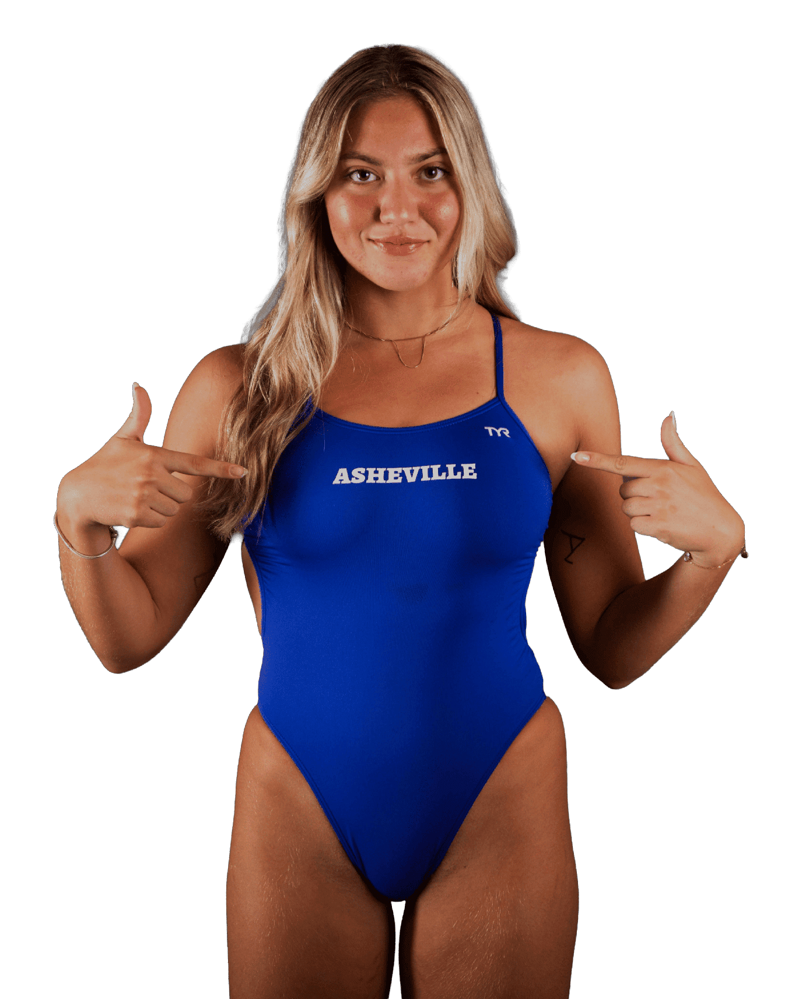
DANAI GKOGKOSI
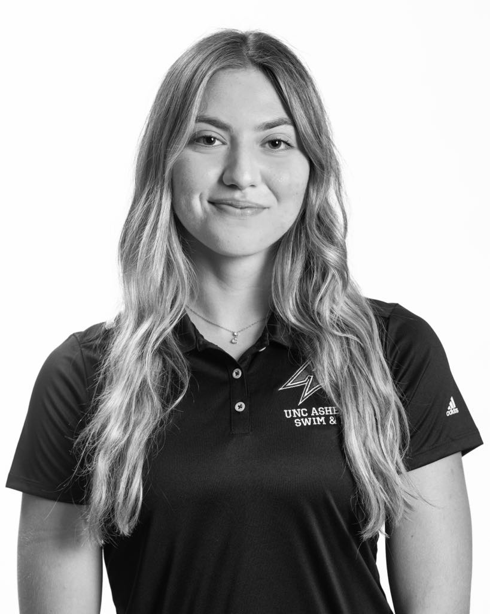
I'm an international student-athlete from Greece, currently swimming at a Division I university in Asheville, North Carolina. I've been a swimmer for 17 years and proudly represented the Greek national team for six of those. Swimming has shaped who I am, teaching me discipline, resilience, teamwork, time management, and leadership. Ever since I was young, I dreamed of moving to the U.S. to study and compete as a Division I athlete, and I made that dream come true. Coming to the States pushed me out of my comfort zone and helped me grow both personally and professionally.
Beyond swimming, I am passionate about marketing, with a particular interest in public relations. I love how PR combines communication, storytelling, and advertising to build meaningful connections between brands and their audiences. It's the perfect mix of creativity and strategy, which is what draws me to the industry. I also enjoy creating content for Instagram and TikTok, not just for fun but with a strategic mindset. Whether it's developing social media campaigns, producing engaging visuals, or telling stories through digital content, I love creating content that connects with people while supporting a brand's goals.
As the Videography & Social Media Intern for UNC Asheville Athletics, I created engaging video and social media content that helped boost engagement by 20%. I filmed and edited game highlights, athlete interviews, and promotional materials, and contributed to the department's digital marketing strategies. This experience taught me how to create content that audiences enjoy and helped me understand what types of posts are most appealing and effective in capturing attention.
My publications in The Blue Banner
I managed the Instagram account for the swim and dive team, creating graphics and content to promote the team and engage our audience.
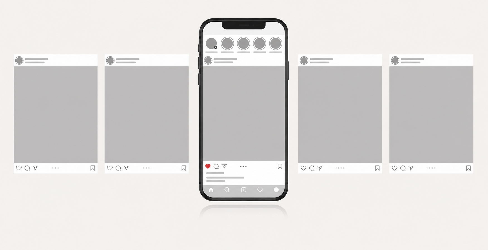
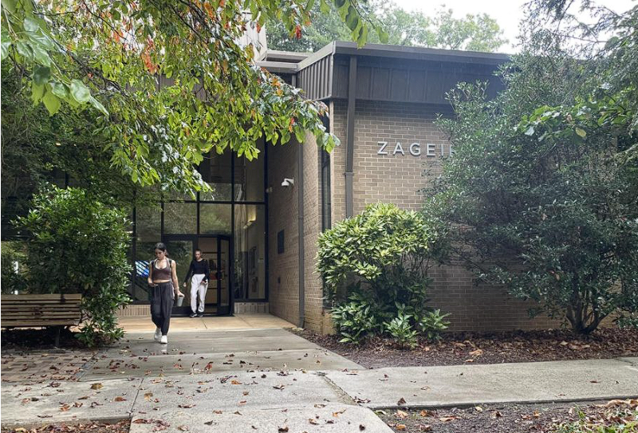
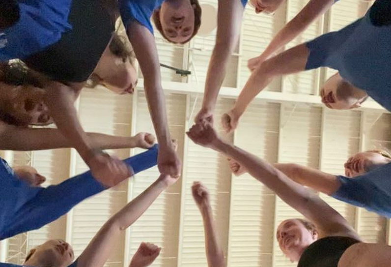
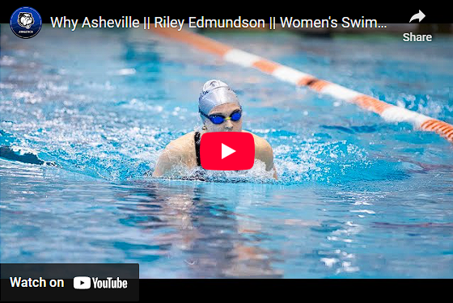
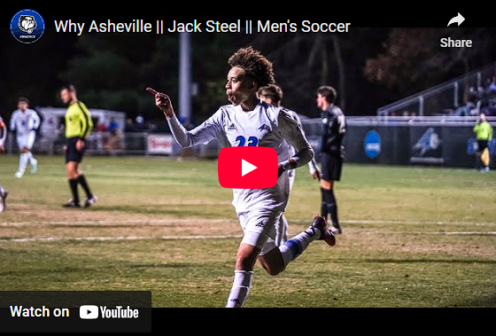
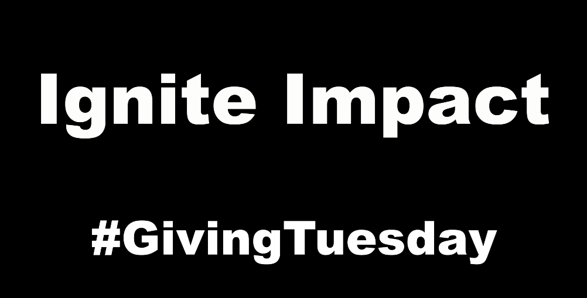
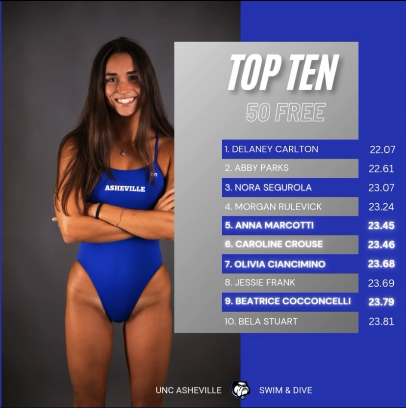
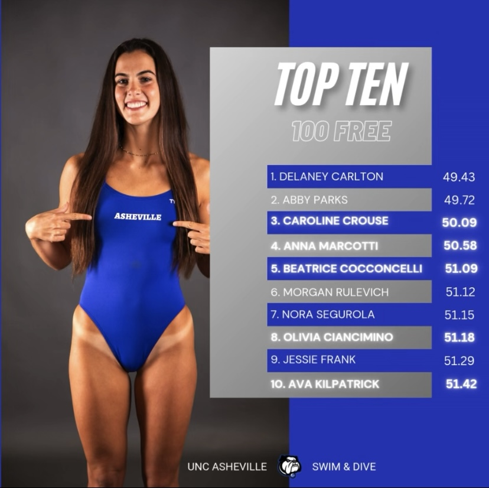
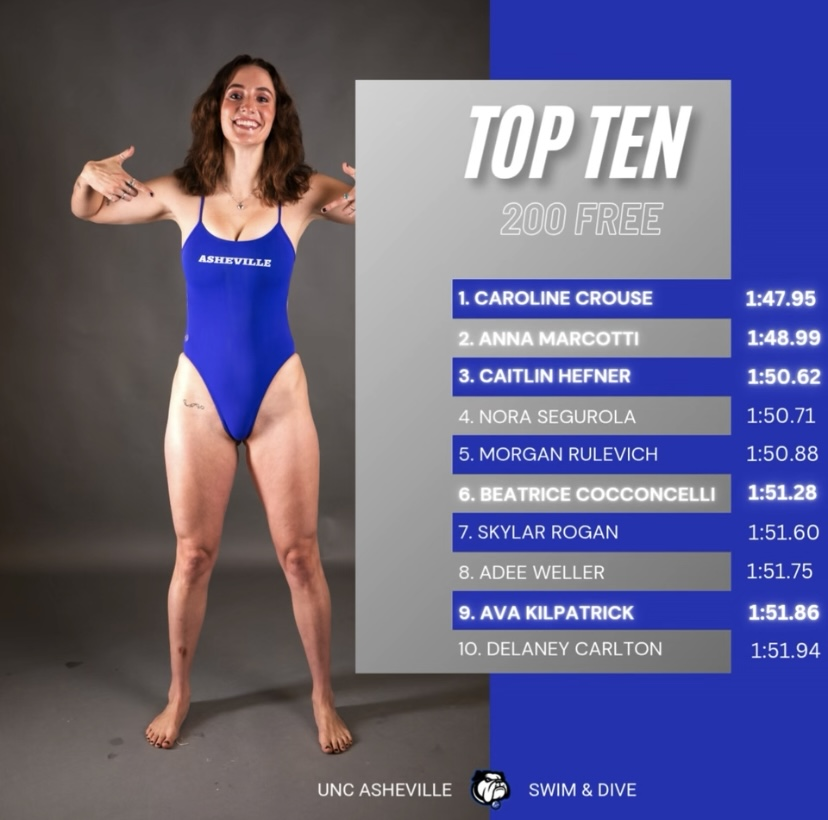
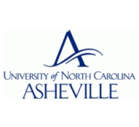
Bachelor of Science in Business
Bachelor of Arts in Mass Communication
Women in Sports & Media Association (WSMA), UNC Asheville
UNC Asheville Department of Communication & Marketing
UNC Asheville Athletics
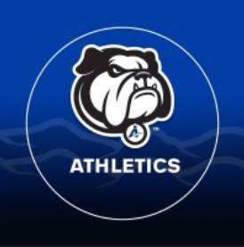
UNC Asheville Athletics
UNC Asheville Athletics
UNC Asheville Athletics
University of North Carolina Asheville
University of North Carolina Asheville